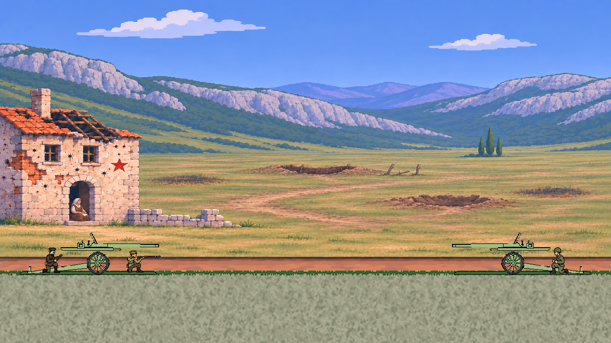
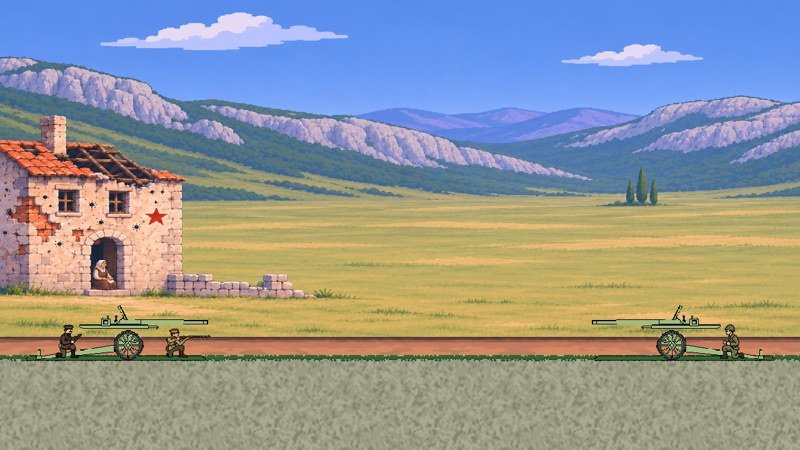
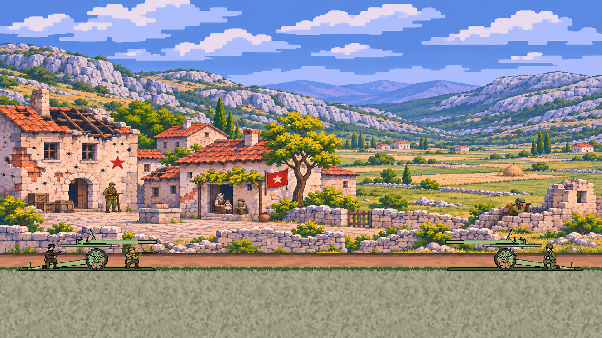
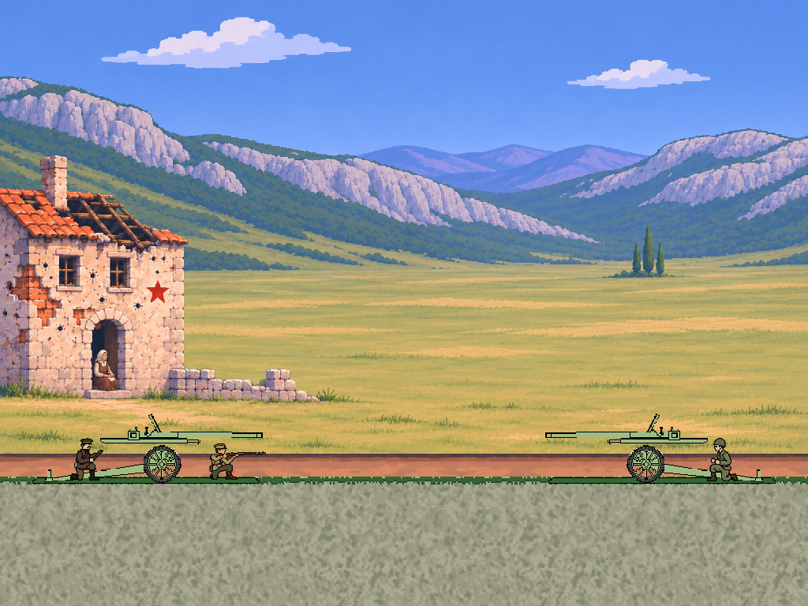
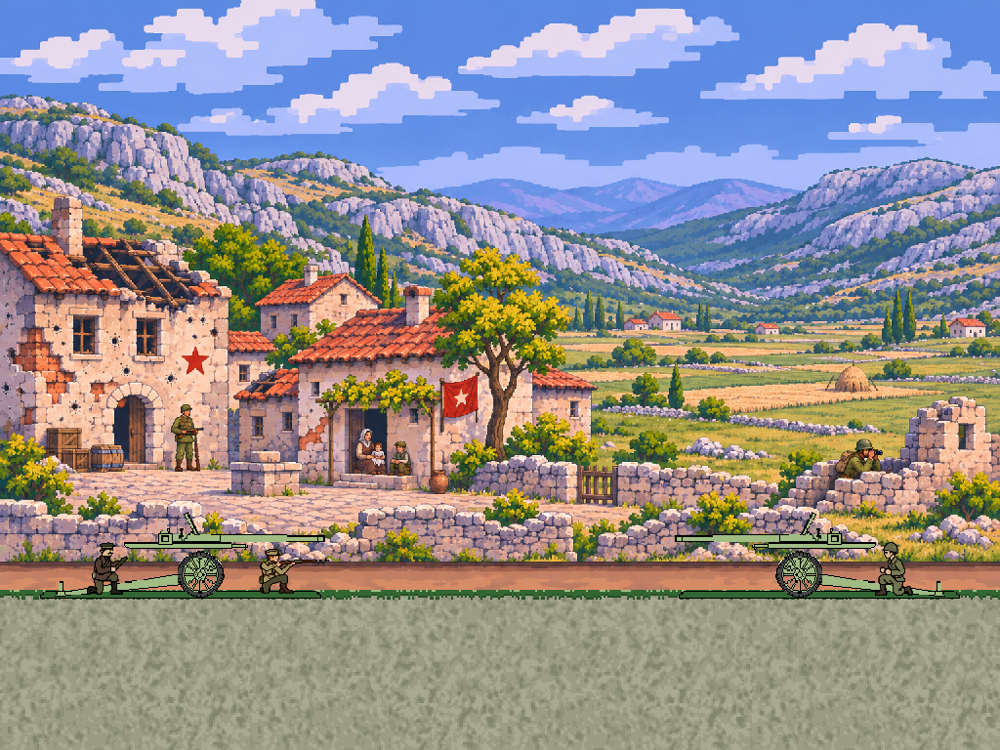

ARHIVA: ranije probe sa zamrznutim ljudima nisu za ugradnju.
Grahovo: sparse wartime comparison
All images: 1536 x 1024. New study adds ground damage, preserving open space and removing fabric flags. Offline compositions, no game executed.
Newest PNG
1280 x 720
Newest: sparse with wartime ground damage
Earlier: sparse untouched meadow
Original detailed version, static flag needs correction
1024 x 768
Newest: sparse with wartime ground damage
Earlier: sparse untouched meadow
Original detailed version, static flag needs correction